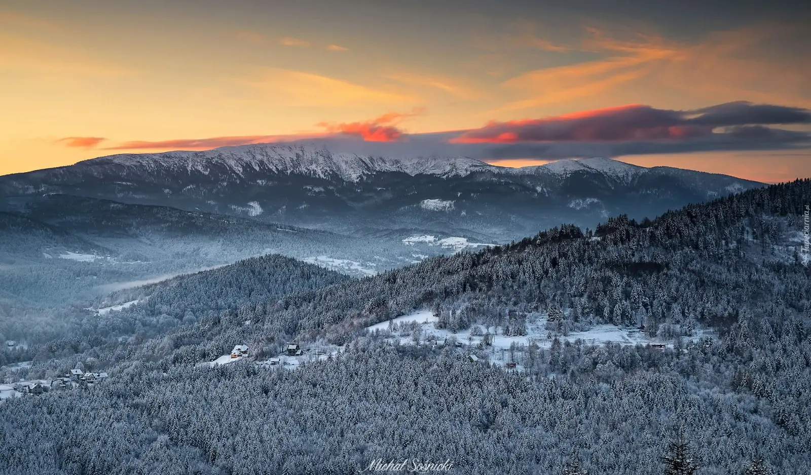

Najwyższy szczyt Beskidów i najstarszy rezerwat w Polsce. Diablak, Markowe Szczawiny i las, który pamięta epokę lodowcową. Slow travel po Babiogórskim Parku Narodowym.
Dlaczego Babiogórski Park Narodowy inaczej
Babiogórski Park Narodowy chroni najwyższy szczyt Beskidów — Babią Górę (1725 m n.p.m.), zwaną Diablakiem. To miejsce, gdzie pogoda zmienia się w mgnieniu oka, a wiatr potrafi zaskoczyć nawet doświadczonych turystów. Wysokość i ekspozycja sprawiają, że Babia Góra ma klimat niemal alpejski — zimą pokrywa się grubą warstwą śniegu, a latem bywa chłodniejsza niż Tatry.
Slow travel po Babiej Górze to rezygnacja z maratonu na rzecz wędrówki. Zamiast wbiec na szczyt i zbiec w dół, warto zaplanować dzień tak, żeby zatrzymać się na grzbiecie, posłuchać wiatru, zjeść kanapkę z widokiem na Tatry. To góra, która nagradza cierpliwych — za wysiłek podejścia daje jeden z najpiękniejszych widoków w Polsce. Babia Góra uczy pokory — i to jest jej największa wartość.
Co zobaczyć
Park dzieli się na dwie główne strefy: strefę ścisłą (rezerwat, wstęp tylko po wyznaczonych szlakach) i strefę ochrony czynnej (z Zawoją, skansenem i ścieżkami edukacyjnymi). Do zwiedzania najlepiej poświęcić 1–2 dni.
Szczyt Diablak i szlaki
- Diablak (1725 m n.p.m.) — najwyższy szczyt Beskidów i całego pasa Karpat Zewnętrznych. Wierzchołek skalisty, z charakterystyczną wychodnią. Widoki na Tatry, Beskid Śląski, Beskid Żywiecki, a przy dobrej pogodzie na słowackie góry. Warto zaplanować wejście o świcie — wtedy szansa na morze chmur i piękną panoramę.
- Szlaki na Diablak — dwa główne podejścia: z Zawoi (Krowiarki) i z Zawoi (Markowe Szczawiny). Trasa z Krowiarek (~3 godziny) jest krótsza, ale bardziej stroma. Trasa z Markowych Szczawin (~2,5 godziny) jest dłuższa, ale łagodniejsza. Warto wybrać wariant odpowiednio do kondycji.
- Perć Akademików — najtrudniejszy szlak na Babią Górę, prowadzący przez skalne stopnie i łańcuchy. Wymaga doświadczenia i odpowiedniego sprzętu. W zimie i przy mokrej pogodzie — bardzo niebezpieczna.
- Schronisko PTTK na Markowych Szczawinach — schronisko na wysokości 1180 m n.p.m., z tradycyjną atmosferą i domową kuchnią. Dobra baza wypadowa na szczyt i miejsce odpoczynku.
Rezerwat ścisły i lasy
- Rezerwat ścisły — fragment starego lasu, który pamięta epokę lodowcową. Rosną tu jodły, buki i świerki, z których część liczy ponad 300 lat. Wstęp tylko po wyznaczonych szlakach.
- Las dolnoreglowy — las, który porasta niższe partie Babiej Góry. Bogaty w gatunki drzew i roślin, w tym rzadkie okazy. Warto dla spaceru.
- Polany i hale — polany i hale na zboczach Babiej Góry, z bogatą roślinnością. Wiosną i latem zakwitają tu rzadkie gatunki roślin, w tym storczyki i krokusy.
Zawoja i ścieżki edukacyjne
- Zawoja — największa wieś w Polsce, położona u stóp Babiej Góry. Znajduje się tu skansen, muzeum parku i punkt informacyjny. Warto na spacer i zapoznanie się z historią regionu.
- Skansen w Zawoi — muzeum etnograficzne, prezentujące tradycyjną kulturę górali babiogórskich. Drewniane chaty, narzędzia, stroje ludowe. Warto dla zrozumienia regionu.
- Ścieżka edukacyjna w Zawoi — ścieżka wokół Zawoi, prowadząca przez różne siedliska. Dobra dla rodzin z dziećmi.
- Klasztor Karmelitów Bosych w Zawoi — klasztor z XIX wieku, dziś dom rekolekcyjny. Warto zobaczyć z zewnątrz i zwiedzić kaplicę.
Kiedy jechać
- Maj i czerwiec — najlepszy czas na wejście na szczyt. Szlaki są przejezdne, dni długie, pogoda stabilna. Uwaga: w wyższych partiach może wciąż leżeć śnieg.
- Wrzesień i październik — drugi najlepszy okres. Kolory jesieni, przejrzyste powietrze, mniej tłumów. Pierwsze śniegi zwykle w drugiej połowie października.
- Lipiec i sierpień — szczyt sezonu. Szlak na Diablak zatłoczony, parkingi pełne. Jeśli musisz — wybierz dzień powszedni i wychodź o 6:00 rano.
- Zima — Babia Góra zimą jest surowa i wymagająca. Silny wiatr, zamiecie, temperatury poniżej -15°C. Wymaga doświadczenia i odpowiedniego sprzętu (raki, czekan, kurtka zimowa). Dla narciarzy — stoki w Zawoi.
Jak dotrzeć
- Samochodem: z Krakowa ~1,5 godziny (przez Rabkę i Skawę), z Zakopanego ~1 godzina, z Bielska-Białej ~1,5 godziny.
- Pociągiem: najbliższa stacja to Sucha Beskidzka (~30 km od Zawoi). Dalej autobusem lub taksówką.
- Autobusem: PKS z Krakowa, Zakopanego i Suchej Beskidzkiej do Zawoi i Krowiarek.
Komunikacja publiczna w regionie jest słaba — samochód znacznie ułatwia poruszanie się między punktami startowymi szlaków (Krowiarki, Markowe Szczawiny, Zawoja).
Ile czasu potrzebujesz
Weekend (2 dni) to minimum — jeden dzień na wejście na Diablak, drugi na Zawoję i okolice.
Trzy dni to realny czas na pierwszy wyjazd. Diablak, Markowe Szczawiny, Perć Akademików (dla doświadczonych), skansen w Zawoi i ścieżki edukacyjne.
Tydzień pozwala poznać cały region — Babią Górę, Beskid Żywiecki, Beskid Śląski i Orawę. Warto dla tych, którzy chcą połączyć góry z kulturą.
Co zjeść i gdzie spać
- Kwaśnica — góralska zupa z kiszonej kapusty z mięsem. Klasyk kuchni beskidzkiej, dostępny w schronisku na Markowych Szczawinach.
- Oscypek z grilla — owczy ser wędzony z żurawiną. Warto spróbować w lokalnych bacówkach.
- Bryndza podhalańska — ser owczy, podawany z chlebem i miodem.
- Karpielówka i śliwowica — lokalne nalewki, dostępne w regionalnych karczmach.
- Pstrąg z grilla — z lokalnych hodowli, dostępny w restauracjach w Zawoi.
- Kawa i ciastka — w Zawoi jest kilka kawiarni, idealnych na popołudniową przerwę.
Bazy noclegowe: Zawoja (największy wybór, pensjonaty, agroturystyki), Markowe Szczawiny (schronisko PTTK), Krowiarki (niewielka osada z pensjonatami), okolice Suchej Beskidzkiej (taniej, ale dalej). W sezonie warto rezerwować z wyprzedzeniem, zwłaszcza w weekendy.
Praktyczne wskazówki
- Rezerwacje — w schronisku na Markowych Szczawinach warto zarezerwować nocleg z wyprzedzeniem, zwłaszcza w sezonie.
- Bilety do parku — wstęp do Babiogórskiego PN jest bezpłatny na szlakach, ale parkingi są płatne (Krowiarki, Markowe Szczawiny).
- Pogoda — Babia Góra jest zdradliwa. Nawet w lipcu może spaść śnieg powyżej 1500 m n.p.m., a wiatr potrafi przekroczyć 100 km/h. Sprawdź prognozę przed wyjściem.
- Buty — solidne buty trekkingowe są niezbędne na szlaku na Diablak. W wyższych partiach bywa ślisko (kamienie, korzenie, śnieg).
- Woda i jedzenie — na szlaku nie ma punktów z wodą. Warto zabrać zapas wody i jedzenie. Schronisko na Markowych Szczawinach to jedyne miejsce z ciepłym posiłkiem.
- Bezpieczeństwo — nie idź sam w wyższe partie. W zimie i przy złej pogodzie trasa na Diablak jest bardzo niebezpieczna. Warto iść z przewodnikiem lub w grupie.
- Zasięg — dobry w Zawoi, słabszy na szlakach. Warto mieć offline mapę.
- Parkingi — Krowiarki i Markowe Szczawiny mają płatne parkingi. W sezonie zapełniają się do 8:00 rano.